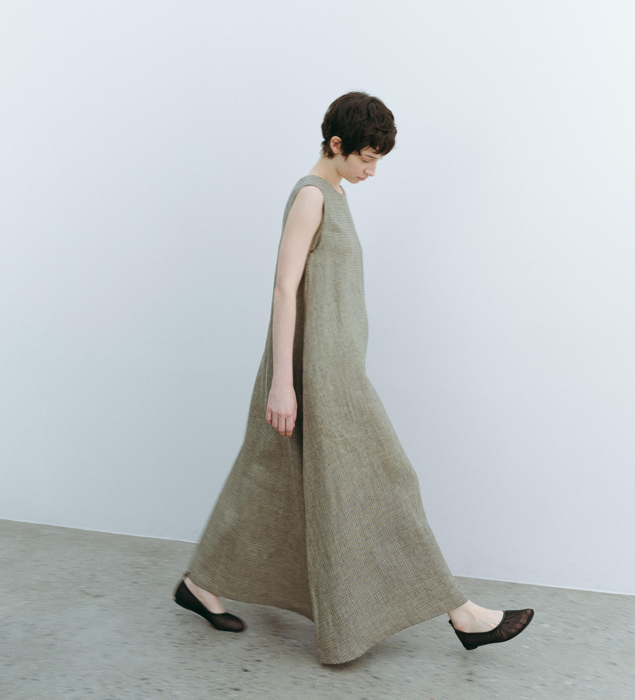

Thoughtfully made. Naturally you.Wear less.
Feel more.
오래도록, 나답게.
유행을 넘어, 나의 일상이 되는 옷.
좋은 소재와 절제된 실루엣으로
시간이 지날수록 깊어지는 가치를 만듭니다.
LESS, BUT WITH MEANING.
THE CONSIDERED
WARDROBE01 / TÊTU
For the way you live.
01 Thoughtful details
02 Effortless silhouettes
03 Timeless essentials
✳
THE EVERYDAY WARDROBE
Find your
everyday favourites.
자꾸 손이 가는 옷에는 이유가 있으니까.
당신의 일상에 자연스럽게 스며드는 한 벌.
Essential duffle coat
익숙한 계절, 오래 남을 실루엣.
Kid mohair knit vest
일상에 더하는 부드러운 온기.
V-neck wool balloon dress
한 벌로 완성하는 나만의 균형.

TÊTU / COLLECTION01
In your own rhythm.↗THE TÊTU PERSPECTIVEA slower pace.
A lasting
impression.
서두르지 않는 아름다움.
익숙한 하루를 조금 다르게 바라보는 일.
자연스러운 움직임, 섬세한 질감,
그리고 나다운 순간을 위한 옷.
Discover the collection ↗
A LITTLE STUBBORN. ALWAYS TÊTU.Some things
are worth holding on to.
떼뚜, 좋은 옷을 향한 단단한 고집.
01 /본질에 대한 고집
têtu는 프랑스어로 ‘고집’을 뜻합니다.
한 벌을 완성하기까지 지켜온 기준을
옷의 모든 디테일에 담습니다.
THOUGHTFULLY CONSIDERED02 /덜어낼수록 선명하게
절제와 단순함 속에서 발견하는 멋.
입는 사람의 분위기를 자연스럽게
드러내는 실루엣을 생각합니다.
QUIETLY DISTINCTIVE03 /계절 그 너머의 가치
지나가는 유행보다 오래 입는 기쁨.
오늘도, 다음 계절에도 꺼내 입을
가치 있는 옷을 지향합니다.
MADE TO STAY Read our story ↗têtu
HERE FOR YOUA little help,
along the way.
떼뚜와 함께하는 모든 순간을 위해.
이용 안내 ↗ 상품과 사이즈를 확인하고 싶어요 +
쇼핑 영역에서 마음에 드는 아이템을 선택한 뒤 공식몰 카테고리로 이동해 주세요. 상세 사이즈, 소재, 판매 여부는 공식몰의 개별 상품 페이지에서 확인할 수 있습니다.
주문한 상품과 배송은 어디에서 확인하나요? +
공식몰 계정에서 주문 내역과 배송 상태를 확인해 주세요.
공식몰 로그인 ↗교환·반품 또는 다른 도움이 필요해요 +
상품에 따라 안내가 다를 수 있으니 공식몰 이용 안내를 확인해 주세요. 고객센터 02-2231-2549로도 문의할 수 있습니다.
교환·반품 안내 확인 ↗